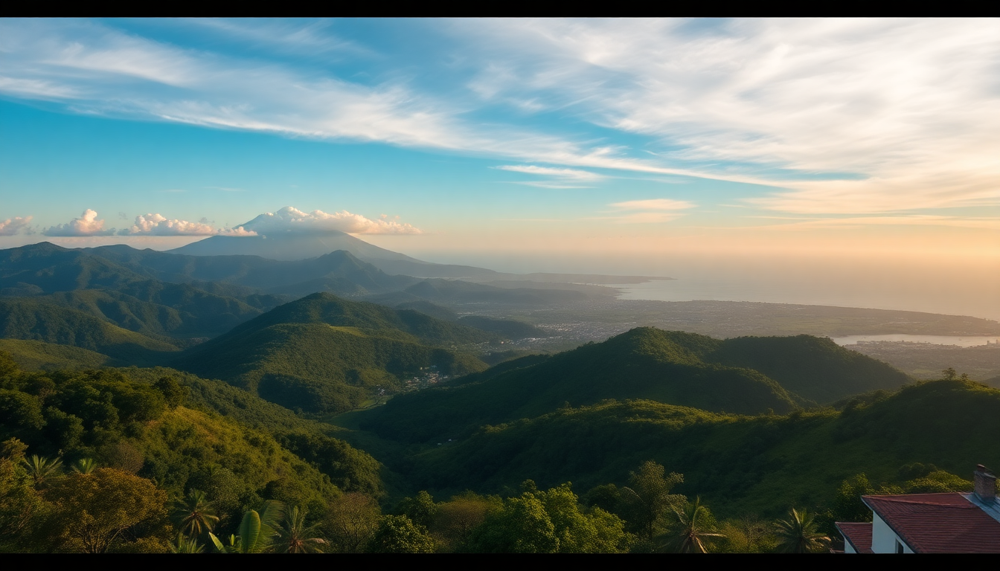

Best Time to Visit Costa Rica: Month-by-Month Guide for 2025

I’ve been to Costa Rica three times now, and the first trip I made the classic mistake of showing up in mid-November expecting dry beaches. Instead, I got sideways rain in Manuel Antonio and a flooded rental car. This guide is what I wish I’d had — a straight-talking month-by-month breakdown for 2025 so you can time your trip to San José, Arenal, and Manuel Antonio without guessing.
When is the best overall time to visit Costa Rica for good weather?
The sweet spot is mid-December through April. That’s the dry season, locally called verano (summer), and it delivers consistent sunshine across all three regions. I spent two weeks in January bouncing between San José, Arenal, and Manuel Antonio, and I needed a rain jacket exactly zero times.
- December to April: Blue skies, low humidity, packed beaches. Prices peak around Christmas and Easter.
- May to November: Green season (winter), with afternoon showers. Cheaper hotels, emptier trails, but some roads get sketchy.
- Best compromise month: February. Crowds thin after New Year, weather stays crisp, and you can still book Hotel El Silencio del Campo in Arenal without selling a kidney.
What is San José like month by month?
San José acts as your arrival hub, but it’s also worth a day or two. I stayed at Hotel Presidente in the Barrio Amón neighborhood — safe, walkable to the Museo del Oro and Mercado Central.
- January–March: Dry and warm. The city feels lively but not chaotic. Grab a coffee at Caféoteca in Barrio Escalante.
- April–May: Transition months. April still dry, May brings first rains. Traffic on Paseo Colón gets worse as locals prep for rainy commutes.
- June–November: Rainy afternoons. Mornings are fine for the Teatro Nacional and Plaza de la Cultura. I’d skip July — it’s soggy and the Parque Nacional trails nearby get muddy.
- December: Dry again, but festive. The Feria de Zapote fair runs late December; it’s loud, crowded, and fun for exactly one evening.
When should I visit Arenal for volcano views and hot springs?
Arenal’s volcano is famous for being shy — clouds often cloak the cone by 10 a.m. I saw it clearly only twice during a week in March. For the best odds, aim for the dry season.
- December–April: Peak visibility. I hiked the Arenal 1968 Trail at 6 a.m. and had the summit to myself. Hot springs at Tabacón Thermal Resort are worth the splurge — book a day pass, not a room.
- May–August: Green and lush. The Mistico Hanging Bridges are less crowded, but bring a poncho for afternoon downpours. I’d avoid June — the rain turned the La Fortuna Waterfall trail into a slip-and-slide.
- September–October: Wettest months. Many smaller lodges close. If you go, stay at Nayara Springs (adults-only, incredible views even in mist) and accept you’ll spend more time in the hot springs than on trails.
- November: Shoulder month. Still wet early in the month, but by late November the volcano starts peeking out. We got lucky with three clear mornings at Arenal Observatory Lodge.
What’s the best time for Manuel Antonio’s beaches and wildlife?
Manuel Antonio is my favorite Costa Rican coast, but timing matters more here than anywhere else. The park closes Mondays, so plan around that.
- December–April: Perfect beach weather. Playa Espadilla is calm, and the Manuel Antonio National Park trails are dry. I saw sloths, capuchins, and a toucan in one morning on the Sendero El Perezoso path. Book park tickets online two weeks ahead — they sell out.
- May–June: Shoulder season. Fewer crowds, cheaper rooms at Hotel Playa Espadilla. Rain usually hits at 2 p.m., so hit the park at 7 a.m. sharp.
- July–October: Rainy and humid. The park is quieter, but Playa Biesanz can get rough currents. I’d skip September — the access road to the park floods easily.
- November: Unpredictable. One day we had sun at Café Milagro for breakfast, the next we got soaked at Playa Gemelas. Late November is safer than early.
How do crowds and costs shift throughout the year?
Costa Rica isn’t cheap, but you can stretch your budget by picking the right month.
- High season (mid-December to April, Easter week): Hotels in San José like Hotel Grano de Oro double their rates. Tours — like the Arenal Volcano Night Walk — book out a week in advance.
- Shoulder season (May-June, November): Prices drop 20-30%. I rented a car through Vamos Rent-a-Car in May for half the January price. Roads are still okay.
- Low season (July-October, excluding August): Deep discounts. We paid $80/night at Kura Boutique Hotel in Manuel Antonio in October (normally $250). Risk: some restaurants in Quepos close for a month.
- August spike: Local school break bumps domestic travel. Avoid Jacó and Tamarindo if you want quiet.
What about holidays and festivals I should plan around?
Local holidays can spike prices or shut things down. Know them before you book.
- Easter Week (Semana Santa): Late March or April 2025. Everything in Manuel Antonio is packed. I’d skip the beaches entirely and stay inland at Arenal Springs Resort.
- July 25 (Guanacaste Day): Celebrated mostly in the northwest, but San José gets quiet. Good for museum visits.
- October 12 (Día de las Culturas): Banks close, but parks stay open. We used the day for a long hike at Cerro Chirripó — permits go fast.
- December 15–January 5: Peak chaos. Book hotels by September. I snagged a room at Selina Manuel Antonio only because someone cancelled.
FAQ
Is Costa Rica rainy in December? Early December is still wet, especially in Manuel Antonio. By mid-December, the dry season kicks in across the Pacific coast and Central Valley. San José and Arenal follow by late December. I’d aim for the 15th or later if you want reliable sun.
Should I visit Costa Rica in October? Only if you’re on a tight budget and don’t mind rain. October is the wettest month in the southern Pacific (including Manuel Antonio) and in Arenal. The Caribbean side (Puerto Viejo) is actually drier then, but that’s a different trip. I’d skip October for a first visit.
What’s the cheapest month to fly to Costa Rica? September, by a lot. I found round-trip flights from Miami to San José for $280 in September 2024. Hotels also bottom out. Just expect daily rain and plan for indoor activities like coffee tours at Café Britt or hot springs in Arenal.
Conclusion
- For guaranteed sun and wildlife: Go February. Book Manuel Antonio park tickets early and stay at Hotel Playa Espadilla for beach access.
- For budget and fewer crowds: May or November. Accept some rain, but enjoy empty trails at Mistico Hanging Bridges and cheap rooms at Hotel Presidente in San José.
- For volcano views: December–April, mornings only. The Arenal 1968 Trail is your best bet.
- Avoid: Easter week in Manuel Antonio and October anywhere on the Pacific coast.
- Wild card: Late November. Risky but rewarding — we had three sunny days in a row at Kura Boutique Hotel, and the price was half of January’s.